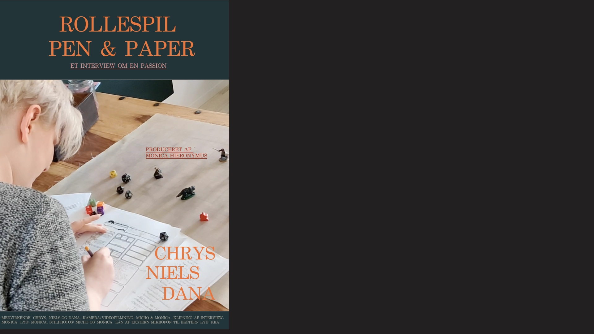
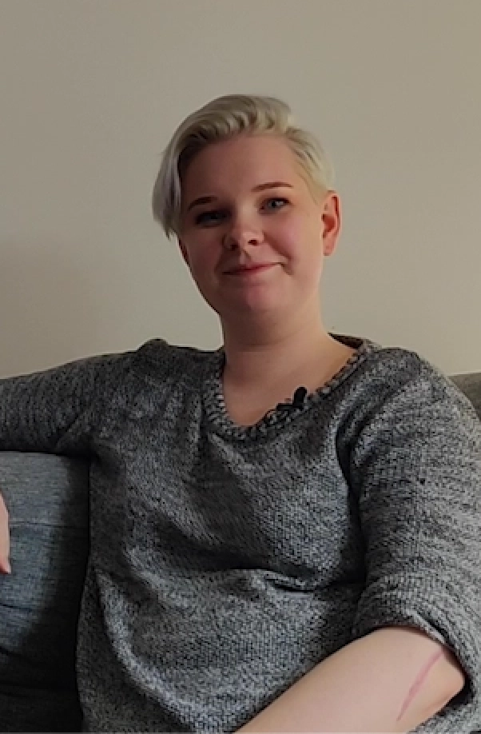
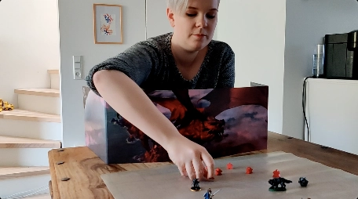
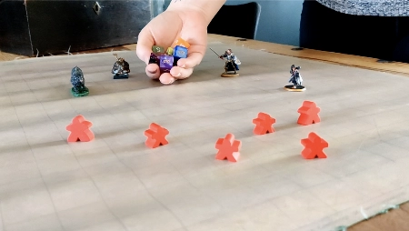
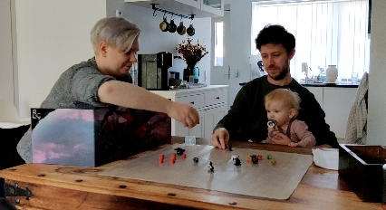
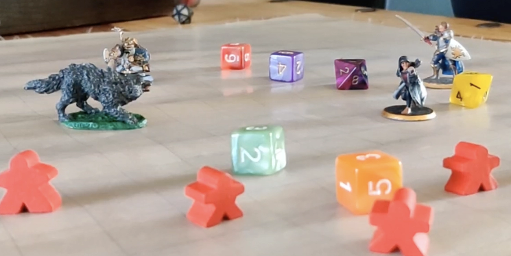

Chrys // Rollespil - pen and paper

Chrys fortæller om sin passion for rollespil, som er meget mere end at klæde sig ud og slås mod orker. Rollespil kan både være fysisk, psykisk men også terapeutisk. Hør her, hvordan hun fortæller specifikt om pen and paper indenfor rollespil.




